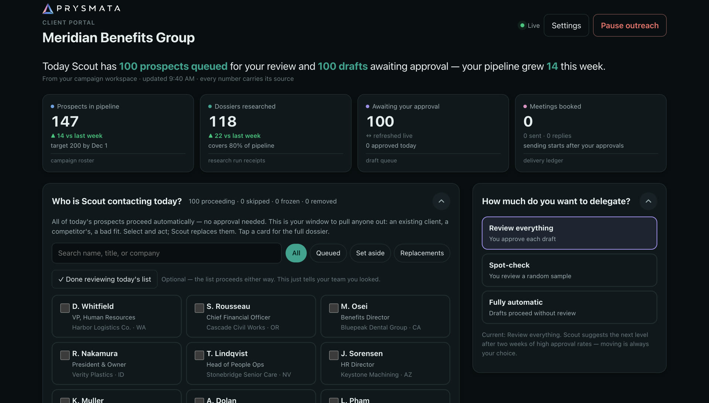

An AI prospecting service, from idea to launch
Co-founder & CTO of Prysmata · Dec. 2025 – present
Shown with example data
Benefits advisors miss good prospects because no one has time to watch every company for signs it needs help. I co-founded Prysmata to fix that, and spent the past year turning the problem into a working service. It spots the companies showing those signs, finds the right decision maker, researches why now is the moment, and drafts a personal email in the advisor's own voice.
I built it by directing a team of AI coding agents instead of hiring engineers. The key decision was keeping people in control: each client gets a simple portal to approve, edit or rewrite every email before it sends, and spending is capped per client. It launched with a pilot client, and the first approved emails went out on Nov. 5, 2026.